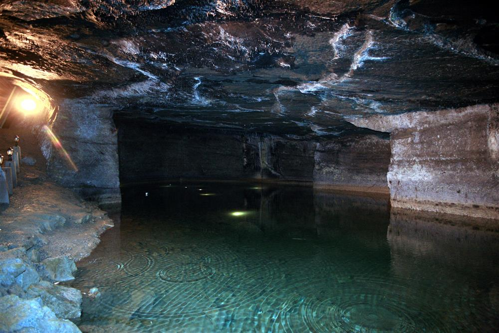

Cehennemağzı Mağaraları
Cehennemağzı Mağaraları Zonguldak Ereğli İlçesi, İnönü Mahallesi'nde bulunmaktadır. Bu bölge Antik Dönem'in Acheron Vadisi olarak bilinmektedir.
Ereğli Müzesi’ne bağlı ören yeri olarak faaliyet gösteren Cehennemağzı Mağaraları yan yana sıralanmış üç mağaradan oluşmaktadır. Birinci mağara, iki bölüm halinde düzenlenmiştir. Birinci bölümde, zemin orijinal bitki ve geometrik motifli mozaik ile döşelidir. İkinci bölümün doğu duvarında küçük bir apsis açılmıştır ve önünde kademeli basamaklar bulunmaktadır. Çok eski bir Hıristiyan kilisesi olan bu mağara, Hıristiyanlığın yayıldığı ilk yıllarda gizli ibadet yeri olarak kullanılmıştır.
İkinci mağara, yol kenarındaki 10-12 metre yükseklikteki yamaç üzerinde bulunmakta ve yöre halkınca Koca Yusuf Mağarası olarak adlandırılmaktadır. Yamaç üzerinde yer alan dar bir girişten geçilerek 3 basamaklı dikey bir merdiven yardımıyla inilen mağara, 1,5 kilometre dağın içine doğru devam etmektedir. 1960’larda tavandan düşen bir kaya yolu kapattığından, ancak 350 metre kadar derinliğe gidilebilmektedir. İnsan elinden çıktığı taşçı kalem izlerinden anlaşılan mağara, yaklaşık 400 metrekarelik bir alanı kaplamakta ve iki fil ayağı ile desteklenmektedir.
Üçüncü mağara, yüzölçümü bakımından en geniş olanıdır. Zemini taban suyu ile kaplıdır. İnsan eli ile yapılan mağara birinci ve ikinci mağaralara su sarnıcı görevi görmüştür.
Cehennemağzı Mağaraları'nın Tarihçesi
İnsanın doğaya karşı yenilmez dayanma ve saldırma gücünü simgeleyen Herakles’e (Herkül), Kral Eurystheus tarafından verilen on iki görevden sonuncu ve en güç olanı, Cehennem Köpeği Kerberus’un, hiçbir ölümlünün bir daha geriye dönemediği Ölüler Ülkesi’nden (Hades) kaçırılmasıdır. Herakles, Altın Post’u aramak üzere yola çıkan Argo Gemicileri ile birlikte Ereğli’ye gelir ve Hermes ile Athena’nın da yardımıyla Kerberus’u yeryüzüne çıkarır. Eurystheus’un Kerberus’u gördüğünde çok korkması üzerine, Herakles onu tekrar Ölüler Ülkesi’ne bırakır. Herakles’in Kerberus’u kaçırmak üzere Ölüler Ülkesi’ne indiği yer Cehennemağzı Mağaraları’dır.
İlkçağın en önemli iki kehanet merkezinden birinin bu mağaralar olduğu bilinmektedir. Diğeri ise Yunanistan’ın Delphoi kentindedir. Bir başka söylenceye göre, şehir tekfurunun kızı hizmetkarı olan gence âşık olur; birlikte evden kaçarlar ve Cehennemağzı Mağaraları’ndaki kız-oğlan odasına saklanırlar. Cehennem zebanisi de dışarıdan gelecek tehlikelere karşı onları korur. Mağaraya giremeyen tekfur kızına ve genç hizmetkarına “taş olun” diye seslenir, kız ve oğlan taş kesilir.
Birinci Dünya Savaşı sonunda Osmanlı donanmasının çürümeye terk edilmesinin ardından muharebe gücü olmayan gemiler arasında yer aldığından kurtarma seferleri yapmasına izin verilen Alemdar'ı milli mücadelenin içine çekebilmek için boğazdan kaçış planı hazırlandı.
Cehennemağzı Mağaralarının birincisi olan ve kilise mağarası olarak da bilinen mağara içindeki sütunlar, sütun başlıkları, mozaik döşeme ve kandil yuvaları, mağaranın paganizmin egemen, Hıristiyanlığın ise yasak olduğu dönemde, ilk Hıristiyanlarca gizli ibadet merkezi olarak kullanıldığını göstermektedir. Bu mağara içinde bulunan kalıntılar, Erken-Hıristiyanlık Dönemi'nin izlerini taşıyan motiflerle süslüdür.